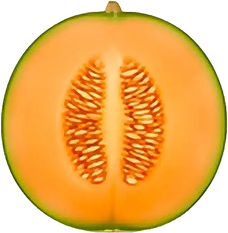

Melon

Un bon melon est lourd pour sa taille et son pédoncule se détache tout seul.
- Saison : juin, juillet, août, septembre
- Pleine saison : juillet, août
- Famille botanique : Cucurbitacées
Histoire
Le melon appartient à la famille des Cucurbitacées. Originaire d’Afrique ou d’Asie centrale, il était déjà cultivé dans l’Égypte ancienne 2 700 ans avant notre ère. Introduit en Italie puis en France au XVᵉ siècle, notamment par les papes d’Avignon, il devient un fruit emblématique des tables royales sous François Iᵉʳ et Louis XIV. Alexandre Dumas l’aimait tant qu’il céda une partie de son œuvre à la bibliothèque de Cavaillon en échange d’une rente viagère de 12 melons par an.
Origine et régions de production
Aujourd’hui, la France est un grand producteur européen de melons, cultivés principalement dans trois grands bassins :
- Sud-Est (Cavaillon, Châteaurenard)
- Sud-Ouest (Quercy, Lectoure)
- Centre-Ouest (Haut-Poitou, Vendée)
Le melon du Quercy et le melon du Haut-Poitou bénéficient d’une IGP (Indication Géographique Protégée), qui garantit un savoir-faire local et une teneur en sucre minimale.
Bienfaits
Le melon est l’allié par excellence de l’hydratation en été :
- Hydratation maximale : Composé à plus de 90 % d’eau, il est rafraîchissant et très peu calorique (environ 34 kcal/100 g).
- Riche en bêta-carotène : Sa chair orange vif témoigne d’une forte teneur en provitamine A, bonne pour la peau et la vue.
- Potassium : Il favorise l’élimination de l’eau et aide à réguler la pression artérielle.
- Source de vitamine C : Un coup de pouce pour le système immunitaire pendant la saison chaude.
Variétés
- Charentais : Chair orange très parfumée, le classique français.
- Galia : Chair verte, écorce brodée.
- Jaune canari : Allongé, chair blanche croquante.
- Piel de sapo : Écorce verte tachetée, chair blanche.
Conserver sans gaspiller
- Conservation : Entier, à température ambiante jusqu’à maturité, puis au frigo. Entamé : 2 à 3 jours, filmé.
- Congélation : En billes ou en cubes : jusqu’à 6 mois, idéal pour les sorbets.
- Rien ne se jette : L’écorce se cuisine en confiture ou en pickles. Un melon trop mûr fait une soupe froide.